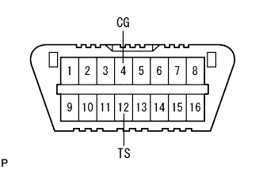

ABS with EBD & TRC & VSC & BA System Utility |
Clearing Yaw Rate & G Sensor 0 Point Memory
Turn the ignition switch off and connect SST (TaSCAN) to DLC3.
Move the shift lever to P.
Turn the ignition switch ON, and following the display on the SST (TaSCAN) screen, select and execute "Utility" → "ABS/VSC/ECB" → "Backup Memory Clear". At this time, check that "VSC Check" is displayed on the multi-information display in the meter.
Turn IG OFF.
Acquiring Yaw Rate & G Sensor 0 Point
Turn the ignition switch off and connect SST (TaSCAN) to DLC3.
With the shift lever in the P position, turn the ignition switch ON and check that the initial check of the indicators finishes.
On the SST (TaSCAN) screen, select "Diagnosis" → "System Diagnosis/Chassis" → "System Name/ABS/VSC" → "Mode Change (Check)" in that order to switch to test mode.
Keep the vehicle stationary for approximately 2 seconds after switching to test mode, and check that the "VSC Check" display on the multi-information display in the meter disappears and "VSC TEST MODE" is displayed.
On the SST (TaSCAN) screen, select "Diagnosis" → "System Diagnosis/Chassis" → "System Name/ABS/VSC" → "Mode Change (Normal)" in that order to switch to normal mode.
Clearing Yaw Rate & G Sensor 0 Point
Turn the ignition switch off and move the shift lever to the P position.
Turn the ignition switch ON, wait approximately 3 seconds, and check that the initial check of the indicator lights finishes.
 |
Using SST, short ←→ open terminals 12 (TS) ←→ 4 (CG) of DLC3 4 times or more within 8 seconds, and check that "VSC Check" is displayed on the multi-information display in the meter.
Acquiring Yaw Rate & G Sensor 0 Point
Turn the ignition switch off and move the shift lever to the P position.
Using SST, connect terminals 12 (TS) ←→ 4 (CG) of DLC3.
Turn IG ON.
Keep the vehicle stationary for approximately 2 seconds, and check that the "VSC Check" display on the multi-information display in the meter disappears and "VSC TEST MODE" is displayed.
Turn the ignition switch off and disconnect terminals 12 (TS) ←→ 4 (CG) of DLC3.
Entering Maintenance Mode
With the ignition switch OFF, connect SST (TaSCAN) to DLC3.
Turn the ignition switch ON, and select "Utility" → "ABS/VSC/ECB" → "Maintenance Mode" in that order on the SST (TaSCAN) screen.
Following the display on the SST (TaSCAN) screen, enter "Maintenance Mode". At this time, check that the slip indicator light in the combination meter comes on. (Confirmation that "Maintenance Mode" is established)
Canceling Maintenance Mode
Turn the ignition switch off to cancel "Maintenance Mode". At this time, check that the slip indicator light in the combination meter is off. (Confirmation that "Maintenance Mode" is canceled)
Entering Maintenance Mode
Stop the engine.
Release the parking brake.
Start the engine while depressing the brake pedal, and keep the pedal depressed.
Depress the parking brake pedal to apply the parking brake.
With the parking brake applied, repeat "release → depress" of the brake pedal 2 times, and keep the brake pedal depressed.
With the brake pedal depressed, operate the parking brake pedal to repeat "release → apply (on)" 2 times, and leave the parking brake applied.
With the parking brake applied again, repeat "release → depress" of the brake pedal 2 times.
Check that the slip indicator light in the combination meter comes on. (Confirmation that "Maintenance Mode" is established)
Canceling Maintenance Mode
Turn the ignition switch off to cancel "Maintenance Mode". At this time, check that the slip indicator light in the combination meter is off. (Confirmation that "Maintenance Mode" is canceled)